50 tons · Inner Sphere · 5 variants · 2777 to 3142

Start with the flaw, because it's the best story on this chassis and it never gets told right. The Enforcer carries a small laser that does almost nothing, and at some point somebody sensible asked why it was there at all. Pull it, add a ton of autocannon ammo instead, problem solved.
Except it wasn't. The ammo feed would have had to run from the left torso, where the reloads live, across to the right arm, where the AC/10 sits, and that route crosses the Enforcer's back, which happens to be the thinnest armour on the whole mech. Worse, the linkage itself kept jamming or cutting the fire rate to nothing. They tried the obvious fix and the fix was worse than the disease, so the "useless" small laser stayed exactly where it was. Sometimes the bad idea is the good idea once you've actually tried the alternative.
The chassis itself has a good origin story too. When the Star League fell, the autocannon-obsessed AFFS was rebuilding its BattleMech forces from nothing, and somebody found unbuilt schematics on Achernar for a Star League design that had never gone into production, the Enfield. Swap two medium lasers for one large one, rush it through development, and you've got the Enforcer rolling off the line in 2777. A case of the right idea sitting on a shelf at exactly the right moment.
What you've got. A Federated AC/10 firing in ten-round bursts, fed from a detachable magazine you can swap between battles. A ChisComp large laser alongside it for the walk in. That small laser I mentioned. Four jump jets for a hundred and twenty metres. Nine tons of armour, and nearly all of it faces forward.
And that's the other thing worth knowing before you climb in. With most of the plate up front, the rear armour on an Enforcer is thinner than on some light mechs. It's built to brawl facing the enemy, not to take a hit from behind, and it has no hand actuators either, so a physical fight isn't really an option. What it does have is a cooling jacket around the autocannon barrel tough enough to double as a club, which is on the quirk list as Barrel Fist and is exactly as blunt as it sounds.
If you're choosing one: the ENF-4R is the classic and it still works fine, the ENF-5D is the one to take if your era allows it, and the two Daniel variants are worth knowing about even if you never field them, because the story behind them is better than most custom jobs get.
Fifty tons split between one good gun and one very good gun. The AC/10 is the headline: Federated Suns armouries loved autocannons and it shows, a ten-round burst weapon fed from a magazine you can pull and replace between fights rather than reloading by hand under fire. The large laser sits alongside it doing the same job at a slightly longer reach, so the two overlap enough that you're rarely without a punch.
Then the small laser, which is the whole point of the story above. On paper it's barely worth the half ton. In practice, replacing it turned out to cost more than keeping it, because of where the ammunition would have had to travel and how thin the armour is back there. I like this detail because it's honest about engineering: not every flaw gets fixed, some just get understood well enough to leave alone.
Nine tons of armour sounds solid for a fifty tonner and mostly is, right up until you check the rear arc. Nearly everything sits up front, which is deliberate: this machine is built to brawl facing you, not to survive getting flanked. Four jump jets give it a hundred and twenty metres to pick its fights, which matters more than the armour distribution once you're actually playing it.
One more thing worth knowing: the AC/10's cooling jacket doubles as a protective sleeve, tough enough that pilots use the whole arm as a club in a pinch. It's on the quirk list as Barrel Fist, alongside Fast Reload for the autocannon and, appropriately, Ammunition Feed Problem for that same gun.
When the Star League collapsed, the AFFS was scrambling to rebuild its BattleMech forces almost from nothing, and its officers had always been particular about autocannons. Around the same time, unbuilt schematics turned up on Achernar for a Star League machine that had sat on a shelf, unbuilt, since before the collapse: the Enfield.
Achernar BattleMechs didn't build the Enfield. They took the design, swapped two medium lasers for one large one, and rushed the result through development. That result was the Enforcer, in service by 2777, built out of a design that was never meant to see combat at all.
The Enfield itself didn't arrive until the Clan Invasion era, over two and a half centuries later, and when it finally did, the two designs ended up serving as close-combat partners. The original plan and the accident that beat it to market, fighting side by side.
What kept the Enforcer relevant for three and a half centuries wasn't any one upgrade, it was that production barely stopped. The Federated Suns has never been the most industrialised of the Great Houses, but the Enforcer line ran through the Succession Wars largely undisturbed, which made it the default medium for AFFS formations almost by default.
The Federated Commonwealth gave it a second life. When Defiance Industries picked up the design to build at Hesperus II, the AFFC started deliberately pairing traditionally Davion machines like the Enforcer and the Valkyrie alongside Steiner standards like the Zeus and the Commando, especially in the Federated Commonwealth Corps. A fifty ton medium became part of how two militaries learned to fight as one.
Then the Helm Memory Core changed the maths again. Achernar brought back veteran Enforcer pilots to help design the ENF-5D, which debuted in late 3050 and immediately became the standard AFFC medium. The order was big enough that Achernar couldn't fill it alone, so Hanse Davion personally authorised Kallon Industries to build under licence too. Both companies kept producing Enforcers for twenty years, until the Jihad destroyed Kallon's plant on Talon and ended Defiance's production line in the same stretch of war.
And there's a smaller story worth knowing. After the Lyran Alliance seceded, Victor Steiner-Davion ordered a rebuilt Enforcer variant specifically to reinforce Davion pride. The Enforcer III came out of a political decision, not a tactical one, which puts it in the same company as the Axman: a machine used to say something about who a nation was, not just what it could shoot.
Every verdict below is against other Enforcers available in the same era. Worth being upfront that this is a short list: 5 variants, against the twenty or thirty you'll find on some of the older chassis here. That's not a gap in the data, it's what Sarna actually documents once you set aside the apocryphal, MWO-only configurations. A design that stayed in steady production rather than getting endlessly reworked doesn't generate as many variants, and that's a reasonable trade for the reliability that came with it.
Nothing in its era does the chassis's job better for the money.
Does the job competently. Another variant does it better or cheaper, but there is no reason to avoid this one.
Only earns its Battle Value if you specifically need what it carries. C3, stealth, a command console, flak, jump jets.
Another variant in the same era, at no more than 3 percent above its Battle Value, matches or beats it on every Alpha Strike damage band, on armour, on structure, and carries every special ability it has. Nothing gained, something lost, no dearer.
Only the Trap tier is calculated. It is worked out from the variant data rather than decided by me, which means it is falsifiable: to argue with it you only have to name something the cheaper machine gives up. The other three are my opinion and you should treat them that way. 0 of the 5 Enforcer variants fail the Trap test. The full rating scale is here, including what it deliberately does not measure.
50 tons · BV 1032 · PV 25 · Skirmisher · 2777
Walk 4 / Run 6 / Jump 4 · 12 Single · 200 Fusion Engine
1x Large Laser, 1x AC/10, 1x Small Laser
The original, 2777. An AC/10 with a detachable ten-burst magazine, a large laser, a small laser nobody rates, and four jump jets. Nine tons of armour, nearly all of it up front. Cheap, dependable, and it's still the Enforcer most people mean when they say the name.
50 tons · BV 1357 · PV 29 · Brawler · 3039
Walk 4 / Run 6 / Jump 4 · 11 Single · 200 Fusion Engine
2x Medium Laser, 1x Prototype Gauss Rifle, 1x Small Laser
Daniel Waylen's personal machine, and the testbed for the first NAIS Gauss rifle prototype in 3039. They pulled the large laser for two mediums to free up the weight for the gun and its reloads. A one-off that worked well enough to matter.
50 tons · BV 1308 · PV 27 · Skirmisher · 3050
Walk 5 / Run 8 / Jump 5 · 12 Single · 250 XL Engine
1x ER Large Laser, 1x LB 10-X AC, 1x Small Laser
3050, the lostech-era rebuild everyone actually wanted. An XL engine gets it to 86.4 km/h, an LB 10-X and an ER large laser replace the old pairing, ferro-fibrous plate and CASE go on, and a fifth jump jet adds thirty metres. Properly modern, and the AFFC bought the entire production run for a decade.
50 tons · BV 1738 · PV 31 · Skirmisher · 3054
Walk 5 / Run 8 / Jump 5 · 10 IS Double · 250 XL Engine
2x ER Medium Laser, 1x Gauss Rifle, 1x ER Small Laser
Waylen's machine again, factory-refitted to 5D standard after the Clan Invasion and carrying a refined version of his old War of 3039 loadout: a proper Gauss rifle, two ER mediums, an ER small. The one-off became a genuine sniper build.
50 tons · BV 1192 · PV 24 · Brawler · 3142
Walk 4 / Run 6 / Jump 4 · 10 IS Double · 200 Light Engine
1x Large Re-engineered Laser, 1x LB 10-X AC, 1x ER Small Laser
Kallon's Dark Age rebuild after New Avalon fell, built fast to backfill AFFS losses. Trades the XL for a light engine, which costs speed but buys survivability, and keeps the 5D's LB 10-X. A sensible, unglamorous wartime mech.
Piloting one. Face the enemy and keep facing them. Your armour is loaded forward on purpose, and anything that gets a shot at your back is going to hurt you badly. Use the jump jets to pick the angle you fight from rather than to escape, since a hundred and twenty metres is enough to get first strike on somebody who hasn't seen you coming. Don't expect much from the small laser. Nobody who designed this thing did either.
Fighting one. Get behind it if you possibly can, because the rear armour genuinely is that much thinner. It has no hands, so a physical fight favours you if you can force one, though the AC/10's barrel jacket is tough enough that the pilot may take a swing anyway. At range it's a fair trade of an AC/10 and a large laser, nothing more, so don't overrate it as a threat past medium distance.
What I see go wrong. People treat the small laser as a reason to close in, expecting extra damage that was never really there. It's a fifty ton mech with one real gun and a good backup. Play it, and fight it, accordingly.
If you run solo games with our AI opponent, the Enforcer splits cleanly between two roles: 3 of the 5 variants are tagged Skirmisher and 2 are tagged Brawler.
A solid, unremarkable mid-tier opponent to seed into a lance when you don't want the AI's whole plan to revolve around one flashy design.
Damage figures are the Alpha Strike short, medium and long values. BV is Battle Value 2.0.
| Variant | Intro | BV | PV | Role | Weapons | S/M/L | Verdict |
|---|---|---|---|---|---|---|---|
| Star League | |||||||
| ENF-4R | 2777 | 1032 | 25 | Skirmisher | 1x Large Laser, 1x AC/10, 1x Small Laser | 3/2/0 | Worth it |
| Late Succession War - Renaissance | |||||||
| ENF-4R (Daniel) | 3039 | 1357 | 29 | Brawler | 2x Medium Laser, 1x Prototype Gauss Rifle, 1x Small Laser | 3/3/2 | Worth it |
| Clan Invasion | |||||||
| ENF-5D | 3050 | 1308 | 27 | Skirmisher | 1x ER Large Laser, 1x LB 10-X AC, 1x Small Laser | 2/2/2 | Worth it |
| ENF-5D (Daniel) | 3054 | 1738 | 31 | Skirmisher | 2x ER Medium Laser, 1x Gauss Rifle, 1x ER Small Laser | 3/3/2 | Worth it |
| Dark Age | |||||||
| ENF-5R | 3142 | 1192 | 24 | Brawler | 1x Large Re-engineered Laser, 1x LB 10-X AC, 1x ER Small Laser | 2/2/1 | Solid |
Availability for the ENF-4R by era, straight off the Master Unit List.
| Era | Available to |
|---|---|
| Star League (2571 - 2780) | Federated Suns |
| Early Succession War (2781 - 2900) | Federated Suns, Mercenary |
| Late Succession War - LosTech (2901 - 3019) | Federated Suns, Kell Hounds, Lyran Commonwealth, Mercenary, Wolf's Dragoons |
| Late Succession War - Renaissance (3020 - 3049) | Federated Suns, Kell Hounds, Lyran Commonwealth, Mercenary, Wolf's Dragoons |
| Clan Invasion (3050 - 3061) | Draconis Combine, Federated Commonwealth, Federated Suns, Kell Hounds, Lyran Alliance, Lyran Commonwealth, Mercenary, St. Ives Compact, Wolf's Dragoons |
| Civil War (3062 - 3067) | Capellan Confederation, Draconis Combine, Federated Commonwealth, Federated Suns, Kell Hounds, Lyran Alliance, Mercenary, Periphery General, St. Ives Compact, Wolf's Dragoons |
| Jihad (3068 - 3080) | Capellan Confederation, Draconis Combine, Federated Suns, Kell Hounds, Lyran Alliance, Mercenary, Periphery General, Wolf's Dragoons |
| Early Republic (3081 - 3100) | Calderon Protectorate, Federated Suns, Filtvelt Coalition, Fronc Reaches, Mercenary, Taurian Concordat |
| Late Republic (3101 - 3130) | Calderon Protectorate, Filtvelt Coalition, Fronc Reaches, Taurian Concordat |
| Dark Age (3131 - 3150) | Calderon Protectorate, Taurian Concordat |
| ilClan (3151 - 9999) | Calderon Protectorate, Taurian Concordat |
50 tons · Inner Sphere · 5 variants · BV 1248 to 1470
The unbuilt Star League design whose schematics became the Enforcer. Didn’t reach production itself until the Clan Invasion era, over two and a half centuries later, and then served as the Enforcer’s own close-combat partner.
50 tons · Inner Sphere · 10 variants · BV 1275 to 1858
Victor Steiner-Davion’s rebuild, ordered specifically to reinforce Davion pride after the Lyran Alliance seceded. A political refresh as much as a technical one.
40 tons · Inner Sphere · 4 variants · BV 1063 to 1234
A lighter, cheaper training and garrison mech built from the same Star League prototype, sharing enough parts with the ENF-4R to keep both easy to supply.
30 tons · Inner Sphere · 15 variants · BV 638 to 936
The other traditionally Davion design the AFFC paired the Enforcer with in the Federated Commonwealth Corps.
80 tons · Inner Sphere · 13 variants · BV 1323 to 2280
The Steiner standard fielded alongside the Enforcer in those same mixed formations. Different house, same lance.
The ENF-4R at BV 1032 is the classic and still perfectly usable. If your era allows the lostech upgrades, the ENF-5D is the better machine outright, with an XL engine, an LB 10-X and an ER large laser. Both Daniel Waylen variants are worth knowing even outside a straight power ranking, since they carry the chassis' best story.
Because they tried. Routing the extra ammunition from the left torso, where it's stored, to the right arm, where the autocannon sits, meant running the feed across the Enforcer's back, which is its thinnest armour. The linkage itself also jammed or cut the rate of fire to unacceptable levels. The fix turned out worse than the problem, so the small laser stayed.
Because nine tons of plate is concentrated forward by design. It's built to brawl facing the enemy, and the trade for strong frontal protection is a rear arc thinner than some light mechs carry. Get behind one and it's in real trouble.
Yes, within its role. It's cheap, dependable, and hits reasonably hard at short to medium range with an AC/10 and a large laser. It isn't fast, isn't durable from behind, and has no hands for a physical fight, so it rewards a pilot who keeps the front armour pointed at the threat.
The Enfield is the unbuilt Star League design whose schematics, found on Achernar after the Star League's collapse, became the basis for the Enforcer. The Enfield itself wasn't actually produced until the Clan Invasion era, more than two hundred and fifty years later, and when it finally arrived the two designs were often fielded together as close-combat partners.
Stats on this page are generated directly from our variant database, which is reconciled against the Master Unit List for Battle Value, introduction dates and per-era faction availability. Alpha Strike damage values are the standard card figures. If you spot something wrong, tell me and I will fix it.